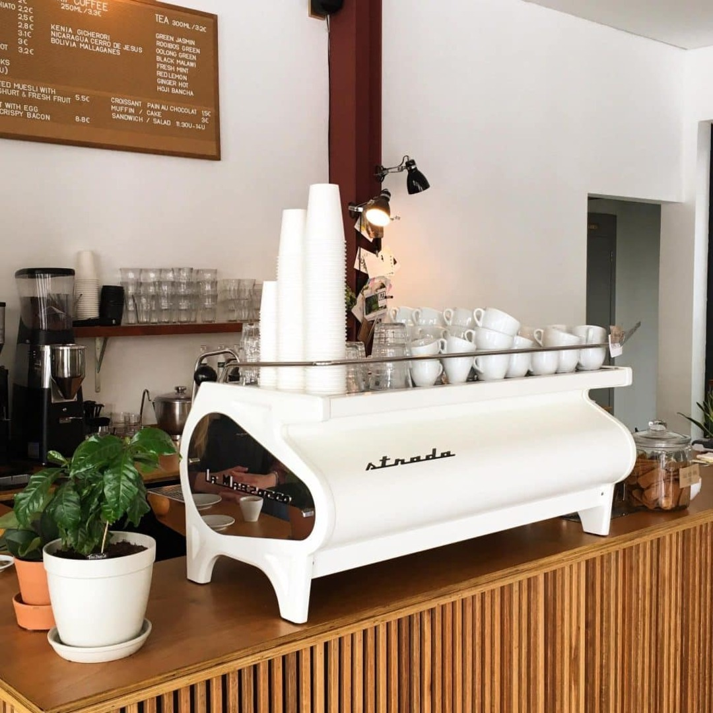

Kolonel Coffee Roastery
Founded in 2011, they have full quality control over the entire process of their store, from bean to cup. They also make a large selection of quality teas and lemonades using their own homemade syrups – something for everybody here.
Visit their website!